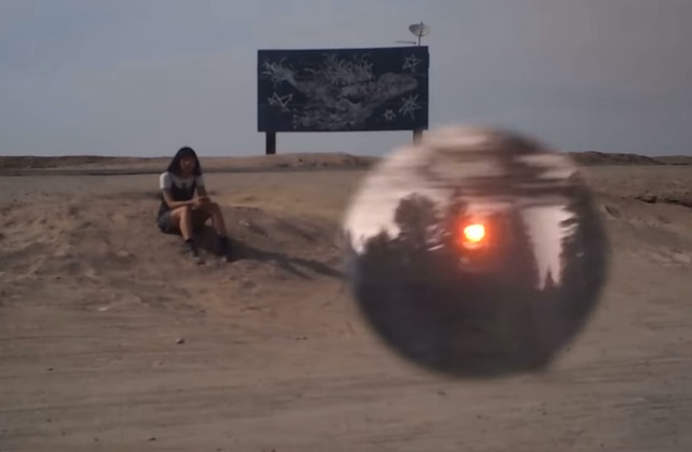

Frances Chang is a musician and artist from New York. Combining use of conventional instrumentation, playful electronics, and poetry, her unique strain of experimental songwriting deals with disrupting accepted reality. Her work is an exercise in communication, probing the tension between idiosyncratic personal experience and the drive to understand and be understood through a collective language.